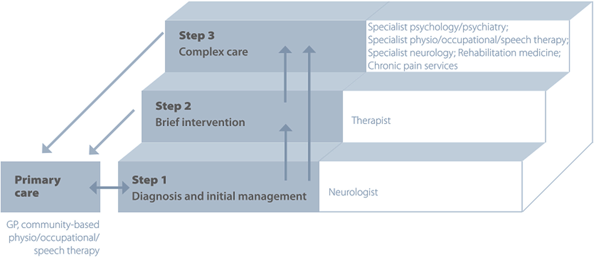

Behandlung


Die Therapie von funktionellen neurologischen Störungen (FND) sollte individuell an den Patienten
angepasst werden. Der erste Schritt sollte immer die Erklärung der Diagnose sein, wobei auch die
positiven Zeichen der Erkrankung gezeigt werden können.
Bei der Therapieplanung sollten neben den Kernsymptomen auch die Komorbiditäten adressiert werden. Wichtige Ziele sind die Maximierung der Selbstständigkeit und das Wiedererlangen der Kontrolle. Die Therapie kann Psychotherapie, Rehabilitation und die Behandlung der Komorbiditäten beinhalten. Der Schweregrad der Symptome sollte ebenfalls berücksichtigt werden.
Das Behandlungsteam kann aus folgenden Fachbereichen bestehen:
Leider gibt es bis jetzt keine standardisierten Ansätze für die stationäre Behandlung von Patienten mit FMD, obwohl einige retrospektive Fallserien ermutigend sind
Bei der Therapieplanung sollten neben den Kernsymptomen auch die Komorbiditäten adressiert werden. Wichtige Ziele sind die Maximierung der Selbstständigkeit und das Wiedererlangen der Kontrolle. Die Therapie kann Psychotherapie, Rehabilitation und die Behandlung der Komorbiditäten beinhalten. Der Schweregrad der Symptome sollte ebenfalls berücksichtigt werden.
Das Behandlungsteam kann aus folgenden Fachbereichen bestehen:
- Neurologie
- (Neuro-)Psychologie
- Psychiatrie
- Physio- und Ergotherapie
- Logopäden
- Sozialarbeit
- Reduzierte “hands-on” Behandlung
- Bewegungen erleichtern, anstatt sie zu unterstützen
- Frühe Gewichtsbelastung
- Zielgerichtete Rehabilitation
- Minimierte Verstärkung maladaptiver Bewegungsmuster und Haltungen
- Vermeidung von Hilfsmitteln, nach dem Prinzip “so viel wie nötig, so wenig wie möglich”
Leider gibt es bis jetzt keine standardisierten Ansätze für die stationäre Behandlung von Patienten mit FMD, obwohl einige retrospektive Fallserien ermutigend sind